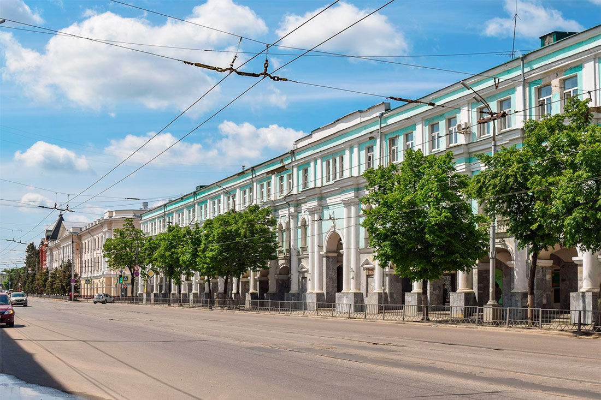
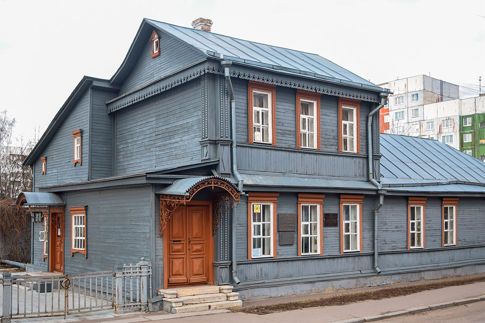
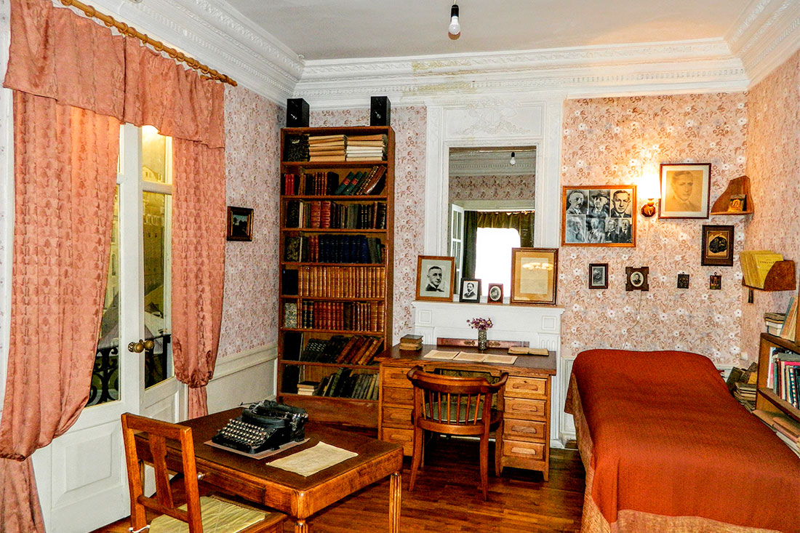
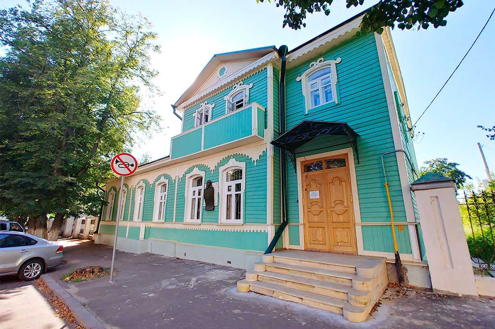
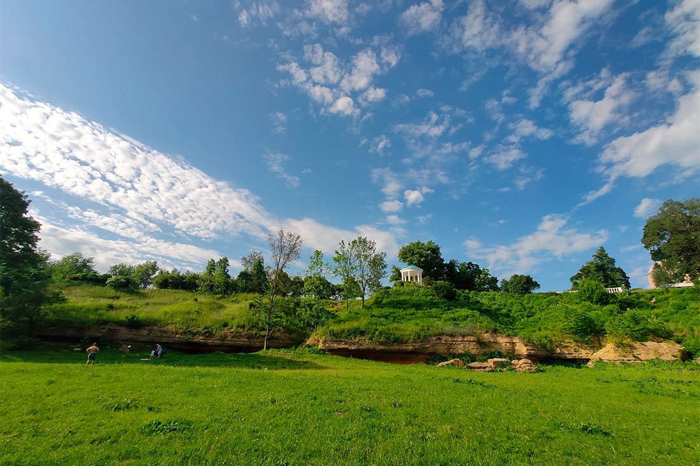

Орёл
1.Гостиный Двор
До революции практически в каждом русском городе были свои торговые ряды. Не стал исключением и Орел. Местный Гостиный двор был образован еще в XVI веке. С тех пор это здание не раз страдало от разрушительных пожаров и неоднократно перестраивалось.
Свой современный облик городской Гостиный двор приобрел уже в 60-е годы ХХ столетия. Прямоугольное здание занимает целый квартал в самом центре Орла. Сегодня весь первый этаж по традиции занят торговыми точками, а на двух верхних этажах разместились различные учреждения и организации.

2.Дом-музей В.А. Русанова
Этот музей – один из филиалов Орловского краеведческого музея. Он посвящен жизни и деятельности русского географа и выдающегося полярного исследователя В.А. Русанова, который родился и жил в Орле. Считается, что именно Русанов послужил прототипом капитана Татаринова – одного из героев произведения В.А. Каверина «Два капитана». Музей был основан в 1982 году в сохранившемся деревянном доме, где Владимир Александрович провел свои детские и юношеские годы.
Сегодня старинный купеческий дом, расположенный в Железнодорожном районе Орла, включен в перечень объектов культурного наследия. Коллекция экспонатов Дома-музея В.А. Русанова рассказывает о разных периодах жизни талантливого ученого и путешественника, а также о его полярных экспедициях. Отдельный зал отведен под экспозицию, которая посвящена жизни и быту состоятельных жителей Орла в XIX и ХХ столетиях.

3.Музей И.А. Бунина
Музей И.А. Бунина в Орле является одним из немногих музеев в России, посвященных жизни и творчеству этого писателя и лауреата Нобелевской премии. Он был создан в 1991 году в стенах старинного дворянского дома, расположенного в исторической части города. Особняк постройки XIX века, где разместился музей писателя, признан объектом культурного наследия и памятником архитектуры и градостроительства.
И.А. Бунин жил и работал в Орле, но в этом особняке писатель только бывал в гостях. Тем не менее, сотрудникам музея удалось создать здесь удивительную атмосферу – настоящий бунинский мир, романтичный и грустный, мятежный и ностальгический. Экспозиция включает семейные фотографии и архивные документы, рассказывает о жизни писателя в Орле, годах эмиграции и литературном наследии И.А. Бунина.

4.Дом-музей Н.С. Лескова
Этот музей – единственный в стране литературно-мемориальный музей, посвященный уроженцу Орловский губернии, выдающемуся русскому писателю Н.С. Лескову. Учреждение открыло свои двери для посетителей в 1974 году. Экспозиция размещена в старом дворянском доме, признанном объектом культурного наследия.
Особняк, в котором расположен Дом-музей Н.С. Лескова, был построен в 70-х годах XIX века на том месте, где раньше стояла сгоревшая родовая усадьба писателя. В шести музейных залах представлено около 800 экспонатов, связанных с жизнью и творчеством Н.С. Лескова. Это книги из личной библиотеки Николая Семеновича, портреты, фотографии, документы, мебель и другие предметы. В музее ежегодно проходят научные конференции и Лесковские чтения.

5.Парк «Дворянское гнездо»
О дореволюционном прошлом Орла напоминает ландшафтный парк «Дворянское гнездо», основанный в 1903 году. Парк и прилегающая к нему территория образуют литературно-культурный заповедник, признанный памятником истории. Раньше на этом месте находилась усадьба, одна из жительниц которой была предполагаемым прототипом героини произведения И.С. Тургенева «Дворянское гнездо». Считается, что по этой причине парк и получил свое название.
В 1987 году парк был признан объектом культурного наследия и охранной зоной. Эта живописная территория, с одной стороны ограниченная рекой Орлик, является одним из любимых мест прогулок в городе. Здесь стоит белоснежная ротонда, которую называют «Тургеневской беседкой», и установлен бюст И.С. Тургенева, выполненный из белого мрамора.
